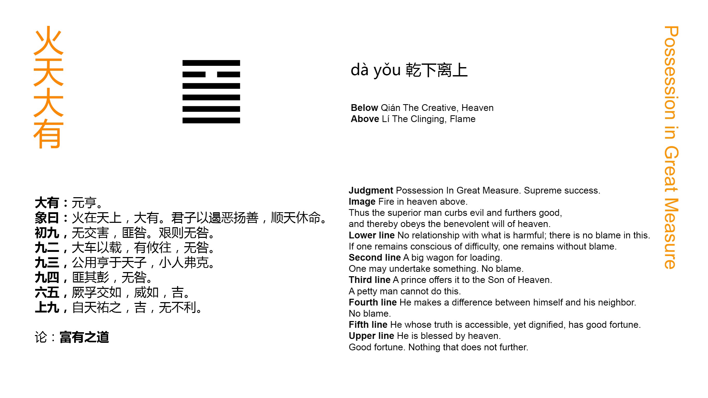

Chinese: 大有 ䷍ dà yǒu

Dà Yǒu ䷍ indicates that, (under the circumstances which it implies), there will be great progress and success.
1. In the first NINE, undivided, there is no approach to what is injurious, and there is no error. Let there be a realisation of the difficulty (and danger of the position), and there will be no error (to the end).
䷍ changing to ䷱
Matching Line 1 in Adjacent Hexagram: ䷌
2. In the second NINE, undivided, we have a large waggon with its load. In whatever direction advance is made, there will be no error.
䷍ changing to ䷝
Matching Line 2 in Adjacent Hexagram: ䷌
3. The third NINE, undivided, shows us a feudal prince presenting his offerings to the Son of Heaven. A small man would be unequal (to such a duty).
䷍ changing to ䷥
Matching Line 3 in Adjacent Hexagram: ䷌
4. The fourth NINE, undivided, shows its subject keeping his great resources under restraint. There will be no error.
䷍ changing to ䷙
Matching Line 4 in Adjacent Hexagram: ䷌
5. The fifth SIX, divided, shows the sincerity of its subject reciprocated by that of all the others (represented in the hexagram). Let him display a proper majesty, and there will be good fortune.
䷍ changing to ䷀
Matching Line 5 in Adjacent Hexagram: ䷌
6. The topmost NINE, undivided, shows its subject with help accorded to him from Heaven. There will be good fortune, advantage in every respect.
䷍ changing to ䷡
Matching Line 6 in Adjacent Hexagram: ䷌
Dà Yǒu ䷍ means 'Great Havings;' denoting in a kingdom a state of prosperity and abundance, and in a, family or individual, a p. 89 state of opulence. The danger threatening such a condition arises from the pride which it is likely to engender. But everything here is against that issue. Apart from the symbolism of the trigrams, we have the place of honour occupied by a weak line, so that its subject will be humble; and all the other lines, strong as they are, will act in obedient sympathy. There will be great progress and success.
Line 2, though strong, is at the lowest part of the figure, and has no correlate above. No external influences have as yet acted injuriously on its subject. Let him do as directed, and no hurtful influence will ever affect him.
The strong line 2 has its proper correlate in line 5, the ruler of the figure, and will use its strength in subordination to his humility. Hence the symbolism.
Line 3 is strong, and in the right (an odd) place. The topmost line of the lower trigram is the proper place for a feudal lord. The subject of this will humbly serve the condescending ruler in line 5. A small man, having the place without the virtue, would give himself airs.
Line 4 is strong, but the strength is tempered by the position, which is that of a weak line. Hence he will do no injury to the mild ruler, to whom he is so near.
Line 5 symbolises the ruler. Mild sincerity is good in him, and affects his ministers and others. But a ruler must not be without an awe-inspiring majesty.
Even the topmost line takes its character from 5. The strength of its subject is still tempered, and Heaven gives its approval.